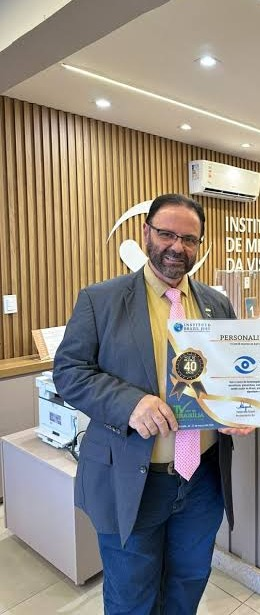

VOZ IA
Dra. Deijanete Fayad IAApresentadora digital • análise e credibilidade
Estúdio digital futurista com notícias, entrevistas, anunciantes e inteligência artificial.

Dra. Deijanete Fayad IA e Paulo Fayad IA na bancada

Notícias, entrevistas, negócios, turismo, cidades e impacto social em uma plataforma nacional de mídia.
Redação digital preparada para integração com fontes públicas e serviços especializados de voz e avatar.
Política, cidades, serviços, eventos e economia local.
Governo, economia, saúde, educação e sociedade.
Diplomacia, turismo, comércio exterior e geopolítica.
Espaço preparado para programação contínua das entrevistas da TV Voz e distribuição de cortes nas redes sociais.
Vitrines para empresas, imóveis, automóveis, gastronomia, turismo, saúde, educação, tecnologia e projetos sociais.